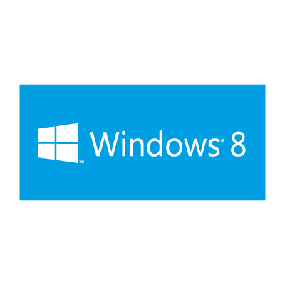
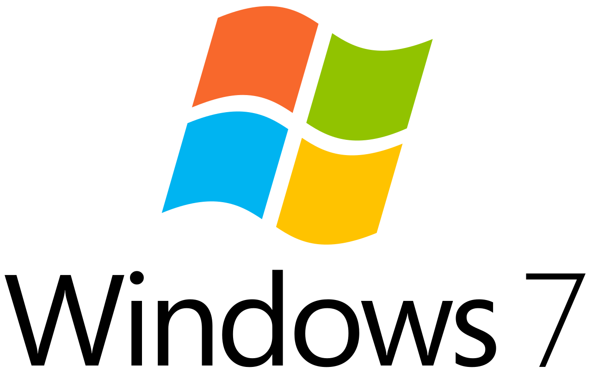
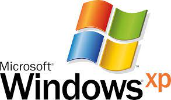
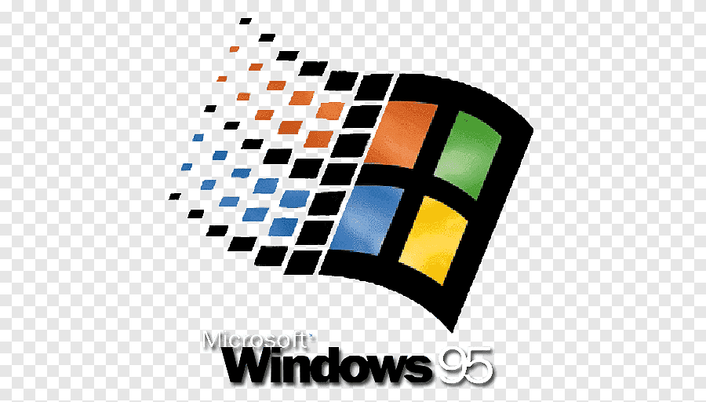
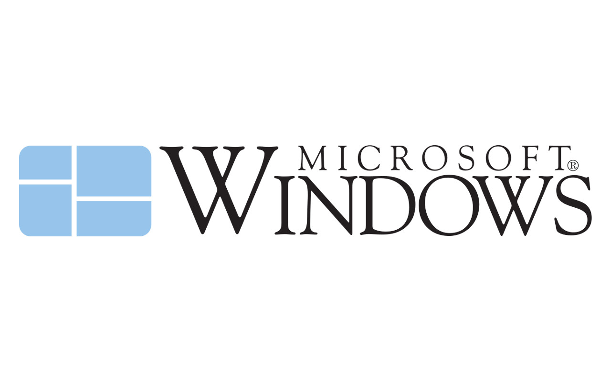

An operating system (OS) is system software that manages computer hardware, software resources, and provides common services for computer programs. Time-sharing operating systems schedule tasks for efficient use of the system and may also include accounting software for cost allocation of processor time, mass storage, printing, and other resources. For hardware functions such as input and output and memory allocation, the operating system acts as an intermediary between programs and the computer hardware, [1][2] although the application code is usually executed directly by the hardware and frequently makes system calls to an OS function or is interrupted by it. Operating systems are found on many devices that contain a computer – from cellular phones and video game consoles to web servers and supercomputers. The dominant general-purpose[3] desktop operating system is Microsoft Windows with a market share of around 76.45%. macOS by Apple Inc. is in second place (17.72%), and the varieties of Linux are collectively in third place (1.73%).[4] In the mobile sector (including smartphones and tablets), Android's share is up to 72% in the year 2020.[5] According to third quarter 2016 data, Android's share on smartphones is dominant with 87.5 percent with also a growth rate of 10.3 percent per year, followed by Apple's iOS with 12.1 percent with per year decrease in market share of 5.2 percent, while other operating systems amount to just 0.3 percent.[6] Linux distributions are dominant in the server and supercomputing sectors. Other specialized classes of operating systems (special-purpose operating systems)[3][7]), such as embedded and real-time systems, exist for many applications. Security-focused operating systems also exist. Some operating systems have low system requirements (e.g. light-weight Linux distribution). Others may have higher system requirements.
| Operating system | symbol | link | GUI |
|---|---|---|---|
| Microsoft Windows | |
Microsoft Windows | |
| Windows version | Codenames | Release date | Release version | Editions | Latest build | Support status |
|---|---|---|---|---|---|---|
| Windows 10 | Threshold, Redstone, 19H1, 19H2, 20H1, 20H2, 21H1 YYHx[1] | July 15, 2015 July 29, 2015 (Availability) | NT 10.0[2] | Main article: Windows 10 editions Windows 10 Home Microsoft Surface x Windows 10 Pro Windows 10 Pro for Workstations Windows 10 Pro Education Windows 10 Enterprise Windows 10 Enterprise LTSC (formerly LTSB) Windows 10 Education Windows 10 IoT Core Windows 10 IoT Enterprise Windows 10 S (now an operational mode within Enterprise and Education)[3 | version 21H1 | All editions except LTSB/LTSC: Major versions serviced for 18 months from release date (30 months for Enterprise customers).[4] 2015 LTSB: Mainstream support until October 13, 2020; Extended support until October 14, 2025 2016 LTSB: Mainstream support until October 12, 2021; Extended support until October 13, 2026 2019 LTSC: Mainstream support until January 9, 2024; Extended support until January 9, 2029 |
| Windows 8.1 | Blue | August 27, 2013 October 17, 2013 (Availability) | NT 6.3 | Main article: Windows 8 editions Windows 8.1 Windows 8.1 Pro Windows 8.1 Enterprise Windows 8.1 OEM Windows 8.1 with Bing | 9600 | Mainstream support ended on January 9, 2018 Extended support ends on January 10, 2023 |
| Windows 8 | '8' | August 1, 2012 October 26, 2012 (Availability) | NT 6.2 | Main article: Windows 8 editions Windows 8 Windows 8 Pro Windows 8 Enterprise Windows 8 OEM | 9200 | Unsupported as of January 12, 2016 |
| Windows 7 | Windows 7 | July 22, 2009 October 22, 2009 (Availability) | NT 6.1 | Main article: Windows 7 editions Windows 7 Starter Windows 7 Home Basic Windows 7 Home Premium Windows 7 Professional Windows 7 Enterprise Windows 7 Ultimate Windows Thin PC | 7601 (Service Pack 1) | Mainstream support ended on January 13, 2015 Extended support ended on January 14, 2020 |
| Windows Vista | Longhorn | November 8, 2006 January 30, 2007 (Availability) | NT 6.0 | Main article: Windows Vista editions Windows Vista Starter Windows Vista Home Basic Windows Vista Home Premium Windows Vista Business Windows Vista Enterprise Windows Vista Ultimate | 6002 (Service Pack 2) | Mainstream support ended on April 10, 2012 Extended support ended on April 11, 2017 |
| Windows XP | Whistler | August 24, 2001 October 25, 2001 (Availability) | NT 5.1 | Main article: Windows XP editions Windows XP Starter Windows XP Home Windows XP Professional Windows XP 64-bit Edition Windows XP Embedded "Codenamed Mantis" Windows Fundamentals for Legacy PCs (July 8, 2006) | 2600 (Service Pack 3) | Mainstream support ended on April 14, 2009 Extended support ended on April 8, 2014 |
| Windows 95 | Chicago | August 15, 1995 August 24, 1995 (Availability) | 4.00 | Windows 95 Windows 95 SP1 (December 31, 1995) Windows 95 OSR1 (February 14, 1996) Windows 95 OSR2 "Codenamed Detroit" (August 24, 1996) Windows 95 USB Supplement to OSR2 (August 27, 1997) Windows 95 OSR2.1 (August 27, 1997) Windows 95 OSR2.5 (November 26, 1997) | 950 | Mainstream support ended on December 31, 2000 Extended support ended on December 31, 2001 |
| Windows 1.0 | Interface Manager | November 20, 1985 | 1.01 | N/A | N/A | Unsupported as of December 31, 2001 |
Windows 10 is a major release of the Windows NT operating system developed by Microsoft. It is the successor to Windows 8.1, released nearly two years earlier, and was released to manufacturing on July 15, 2015, and broadly released for the general public on July 29, 2015.[18] Windows 10 was made available for download via MSDN and Technet, as a free upgrade for retail copies of Windows 8 and Windows 8.1 users via the Windows Store, and to Windows 7 users via Windows Update. Windows 10 receives new builds on an ongoing basis, which are available at no additional cost to users, in addition to additional test builds of Windows 10, which are available to Windows Insiders. Devices in enterprise environments can receive these updates at a slower pace, or use long-term support milestones that only receive critical updates, such as security patches, over their ten-year lifespan of extended support
Windows 8 is a major release of the Windows NT operating system developed by Microsoft. The product was released to manufacturing on August 1, 2012, and generally to retail on October 26, 2012.[6] Windows 8 was made available for download via MSDN and TechNet and available as a free upgrade for retail copies of Windows 7 users via Windows Update.Windows 8 introduced major changes to the operating system's platform and user interface to improve its user experience on tablets, where Windows was now competing with mobile operating systems, including Android and iOS.[7] In particular, these changes included a touch-optimized Windows shell based on Microsoft's "Metro" design language and the Start screen (which displays programs and dynamically updated content on a grid of tiles), a new platform for developing "apps" with an emphasis on touchscreen input, integration with online services (including the ability to synchronize apps and settings between devices), and Windows Store, an online distribution for downloading and purchasing new software. Many of these features were adoptions from Windows Phone. Windows 8 added support for USB 3.0, Advanced Format hard drives, near field communications, and cloud computing. Additional security features were introduced, such as built-in antivirus software, integration with Microsoft SmartScreen phishing filtering service and support for UEFI Secure Boot on supported devices with UEFI firmware, to prevent malware from infecting the boot process.
Windows 7 is a major release of the Windows NT operating system developed by Microsoft. It was released to manufacturing on July 22, 2009, and became generally available on October 22, 2009.[9] It is the successor to Windows Vista, released nearly three years earlier. It remained an operating system for use on personal computers, including home and business desktops, laptops, tablet PCs and media center PCs, and itself was replaced in November 2012 by Windows 8, the name spanning more than three years of the product. Until April 9, 2013, Windows 7 RTM provided content such as security updates, software updates, PC driver updates and technical support, after which installation of Service Pack 1 is required for users to receive support and updates. Windows 7's server counterpart, Windows Server 2008 R2, was released at the same time. The last supported version of Windows based on this operating system was released on July 1, 2011, entitled Windows Embedded POSReady 7. On January 12, 2016, Microsoft ended support for Internet Explorer versions older than Internet Explorer 11 on Windows 7.[10][11][12] Extended support ended on January 14, 2020, over ten years after the release of Windows 7, after which the operating system ceased receiving further support or security updates to most users, and all PCs that blocks Windows Update on Windows 7 versions newer than KB4499164 released in May 2019 displays a full-screen upgrade warning notification with an information page link starting from January 15, 2020. A support program is currently available for enterprises, providing security updates for Windows 7 for up to four years since the official end of life.[13] However, Windows Embedded POSReady 7, the last Windows 7 variant, continues to receive security updates until October 2021.
Windows Vista is a major release of the Windows NT operating system developed by Microsoft. Development was completed on November 8, 2006,[2] and over the following three months, it was released in stages to computer hardware and software manufacturers, business customers and retail channels. On January 30, 2007, it was released internationally[3] and was made available for purchase and download from the Windows Marketplace; it is the first release of Windows to be made available through a digital distribution platform.[7] The release of Windows Vista came more than five years after the introduction of its predecessor, Windows XP, the longest time span between successive releases of Microsoft Windows desktop operating systems. New features of Windows Vista include an updated graphical user interface and visual style dubbed Aero, a new search component called Windows Search, redesigned networking, audio, print and display sub-systems, and new multimedia tools such as Windows DVD Maker. Vista aimed to increase the level of communication between machines on a home network, using peer-to-peer technology to simplify sharing files and media between computers and devices. Windows Vista included version 3.0 of the .NET Framework, allowing software developers to write applications without traditional Windows APIs.

Windows XP is a major release of the Windows NT operating system developed by Microsoft. It was the direct successor to both Windows 2000 for professional users and Windows Me for home users, and it was released to manufacturing on August 24, 2001, with retail sales beginning on October 25, 2001. It was Microsoft's operating system for use on personal computers such as home and business desktops, laptops, tablet PCs and media center PCs until replaced by Windows Vista in February 2007. Development of Windows XP began in the late 1990s as "Neptune", an operating system (OS) built on the Windows NT kernel which was intended specifically for mainstream consumer use. An updated version of Windows 2000 was also originally planned for the business market; however, in January 2000, both projects were scrapped in favor of a single OS codenamed "Whistler", which would serve as a single OS platform for both consumer and business markets. As such, Windows XP was the first consumer edition of Windows not to be based on the Windows 95 kernel and MS-DOS.
Windows 95 is a consumer-oriented operating system developed by Microsoft as part of its Windows 9x family of operating systems. The first operating system in the 9x family, it is the successor to Windows 3.1x, and was released to manufacturing on August 15, 1995, and generally to retail on August 24, 1995.[4][5] Windows 95 merged Microsoft's formerly separate MS-DOS and Microsoft Windows products, and featured significant improvements over its predecessor, most notably in the graphical user interface (GUI) and in its simplified "plug-and-play" features. There were also major changes made to the core components of the operating system, such as moving from a mainly cooperatively multitasked 16-bit architecture to a 32-bit preemptive multitasking architecture, at least when running only 32-bit protected mode applications. Accompanied by an extensive marketing campaign,[1] Windows 95 introduced numerous functions and features that were featured in later Windows versions, such as the taskbar, notification area, and the "Start" button. Three years after its introduction, Windows 95 was followed by Windows 98. Microsoft ended extended support for Windows 95 on December 31, 2001.
Windows 1.0 is a graphical operating environment for personal computers, developed by Microsoft. Microsoft had worked with Apple Computer to develop applications for Apple's 1984 original Macintosh, the first mass-produced personal computer with a graphical user-interface (GUI) that enabled users to see user-friendly icons on screen. Microsoft released Windows 1.0 on November 20, 1985, as the first version of the Microsoft Windows line. It runs as a graphical, 16-bit multi-tasking shell on top of an existing MS-DOS installation, providing an environment which can run graphical programs designed for Windows, as well as existing MS-DOS software. Microsoft's founder Bill Gates spearheaded the development of Windows 1.0 after he saw a demonstration of a similar software suite, Visi On, at COMDEX in 1982. Despite positive responses to early presentations and support from a number of hardware- and software-makers, critics received Windows 1.0 poorly, feeling that it did not meet their expectations. In particular, they raised concerns about the lack of resources for new users, and performance issues, especially on systems with lower hardware specifications. Despite the criticisms, Windows 1.0 proved an important milestone for Microsoft, as it introduced the Microsoft Windows line.
